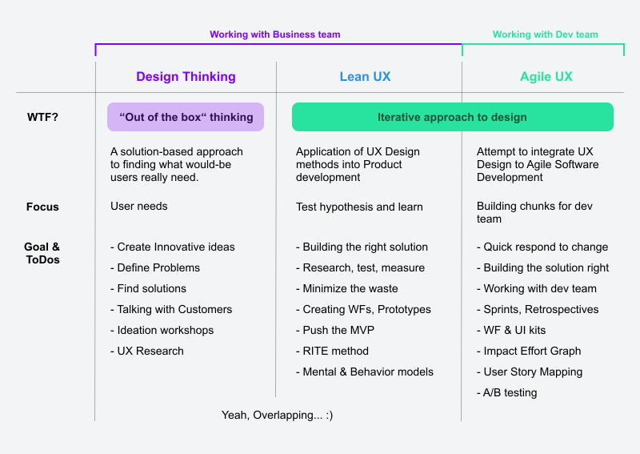
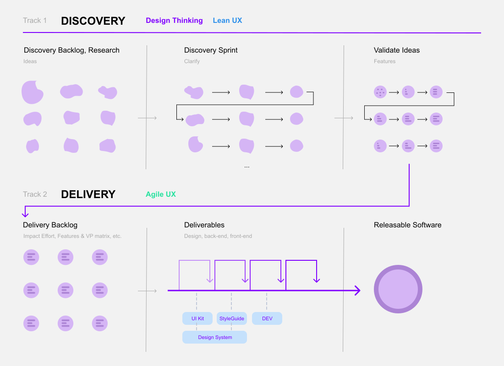

Various
Product design and validation
Creating wireframes for landing pages, and prototypes
Finding the right workflow with the product team and working with tight deadlines
Minden szervezetben, minden csapatban más és más termékfejlesztési folyamat működik hatékonyan. A discovery meetingekre hozzuk el az új ötleteket, lehetséges megoldásokat, hipotéziseket és közösen vitatjuk meg őket.
Sokat foglalkoztam azzal, hogy milyen folyamat lehet optimális egy termék fejlesztésére. Rengeteg cikket olvastam a témában, beszélgettem project managerekkel, designerekkel az Amuse konferencián, de rá kellett jöjjek, hogy nincs jó folyamat. Minden szervezetben más jön be. Ekkor kezdtem el otthoni projektként kialakítani egy saját modellt. Erről az egyik blogcikkemben írtam bővebben. Mivel gyakorlatban még nem volt lehetőségem kipróbálni ezért gyakorlati pélldákat nem tudok mondani. Ezért néhol megkérdőjelezhető, néhol hiányos, de tükrözi azt a képet, ahogy szerintem működnie lehetne egy csapatnak.
Az alapot a Design Thinking, Lean és Agile UX módszertanok adták.
Magát a folyamatot pedig így képzeltem el:
A tervezésben az egyik leglényegesebb dolog, hogy valódi célcsoportból származó userekkel beszélgessünk. A termékfejlesztések során lehetősegem nyílt valaódi felhasználókkal beszélgetni, ami az első pár alkalomnál hatalmas "AHA" élménnyel szolgált. A teammel megpróbáltuk a Mom Test szabályai alapján kiválasztani a usereket.
A user interjúk során sokféle ügyféllel beszélgettünk. A legfontosabb feladatok:
Az OptiMonkkal 2019 Q1-ben több mint 179 screent terveztem meg a termékfejlesztés során.
A termékfejlesztői teammel szorosan együtt működve újraterveztük az egész admin felületet és új folyamatokat alakítottunk ki, mint pl a teljesen új onboarding folyamat vagy a landing page szerkesztő.